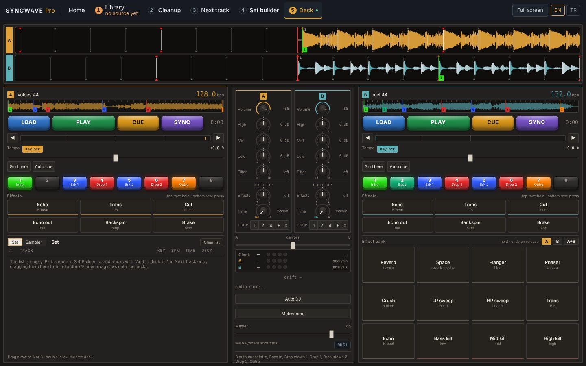

SyncWave Pro reads your rekordbox or Mixed In Key library, cleans it up, tells you what fits next, builds two-hour sets — and plays them on two decks with beat sync that locks kick on kick.
SyncWave Pro rekordbox ya da Mixed In Key kütüphaneni okur, temizler, sıradaki uygun parçayı söyler, iki saatlik setler kurar — ve kick'i kick'e oturtan beat sync ile iki deck'te çalar.

Each stage builds on the one before it, from a messy collection to a mix that plays itself.
Her aşama bir öncekinin üstüne kurulur: dağınık arşivden kendi kendine çalan mikse.
Load a rekordbox XML, a Mixed In Key CSV or just a folder. Tempo, key, energy, beat grid and waveform for every track.
rekordbox XML, Mixed In Key CSV ya da sadece bir klasör. Her parça için tempo, ton, enerji, beat grid ve dalga formu.
Finds duplicates, moved files and tracks that still need analysis — without ever touching your audio files.
Kopyaları, yeri değişmiş dosyaları ve analiz bekleyen parçaları bulur — ses dosyalarına asla dokunmaz.
Tell it what's playing; it ranks your library by key, tempo, energy and timbre, and measures the transition itself.
Çalanı söyle; kütüphaneni ton, tempo, enerji ve tını ile sıralar, geçişin kendisini ölçer.
Lays out a two-hour set along one of 32 energy routes through your collection, then sends it to the decks.
Arşivinde 32 enerji rotasından biri boyunca iki saatlik bir set dizer ve deck'lere gönderir.
Two decks with real beat sync, hot cues, loops, EQ, filter and effects. Auto DJ mixes the list for you with EQ'd, phrase-aligned transitions.
Gerçek beat sync, hot cue, loop, EQ, filtre ve efektli iki deck. Auto DJ listeyi EQ'lu, frazına oturan geçişlerle senin için mikser.
MIDI controller support. Fix a beat grid once — it follows the track to the decks and back to rekordbox.
MIDI kontrolcü desteği. Beat grid'i bir kez düzelt — parçayla deck'e ve rekordbox'a gider.
Every feature, 14 days, no account and no card. Buy a license any time to keep going.
Tüm özellikler, 14 gün, hesap ve kart yok. Devam etmek için istediğin zaman lisans al.
Not sure? Apple menu → About This Mac shows "Chip: Apple M…" or "Processor: Intel".
Emin değil misin? Apple menüsü → Bu Mac Hakkında "Çip: Apple M…" ya da "İşlemci: Intel" gösterir.
One payment, no subscription. Your key arrives by e-mail right after checkout.
Tek ödeme, abonelik yok. Anahtarın ödemeden hemen sonra e-postayla gelir.
No. Your music, library, grids and analysis stay on your Mac. The only network call is the one-time license activation.
Hayır. Müziğin, kütüphanen, gridlerin ve analizlerin Mac'inde kalır. Tek ağ bağlantısı bir kerelik lisans etkinleştirmesidir.
No. SyncWave Pro never edits or deletes audio files. Exports (playlists, rekordbox XML) are written as new files that you import yourself.
Hayır. SyncWave Pro ses dosyalarını asla düzenlemez ya da silmez. Dışa aktarımlar (playlist, rekordbox XML) senin içe aktardığın yeni dosyalar olarak yazılır.
No — a plain music folder works. If you have them, SyncWave Pro reads their data to start faster.
Hayır — düz bir müzik klasörü yeter. Varsa, SyncWave Pro daha hızlı başlamak için onların verisini okur.
Mac only for now.
Şimdilik yalnızca Mac.
Try it for 14 days first. Payments are processed by Lemon Squeezy (merchant of record); refund requests follow the policy shown at checkout.
Önce 14 gün dene. Ödemeleri Lemon Squeezy (satıcı kaydı) işler; iade talepleri ödeme sayfasındaki politikaya tabidir.
SyncWave Pro does not collect analytics, crash reports or usage data. When you activate or deactivate a license key, the app sends the key and an anonymous name for your Mac to Lemon Squeezy to validate it. Purchases are processed by Lemon Squeezy under their own privacy policy. This website uses no cookies and no trackers.
1. License. A personal, non-exclusive, non-transferable license to use SyncWave Pro on up to two Macs you own or control. The trial allows full use for 14 days on one Mac. 2. Restrictions. No reselling, renting, sublicensing or redistributing the software or keys; no removing or bypassing the license check. No reverse engineering except where the law expressly allows it. 3. Your data. The software works offline; your files and analysis stay on your computer. Only license activation contacts the payment provider. 4. Music rights. You are responsible for having the rights to the audio you use. 5. Updates and support. 2.x updates included; e-mail support on a best-effort basis. 6. Refunds. Handled by Lemon Squeezy per the policy shown at checkout. 7. No warranty. Provided "as is". Keep backups and test your setup before performing live. 8. Liability. To the extent permitted by law, liability is limited to the price paid. 9. Termination. The license ends automatically if these terms are broken.